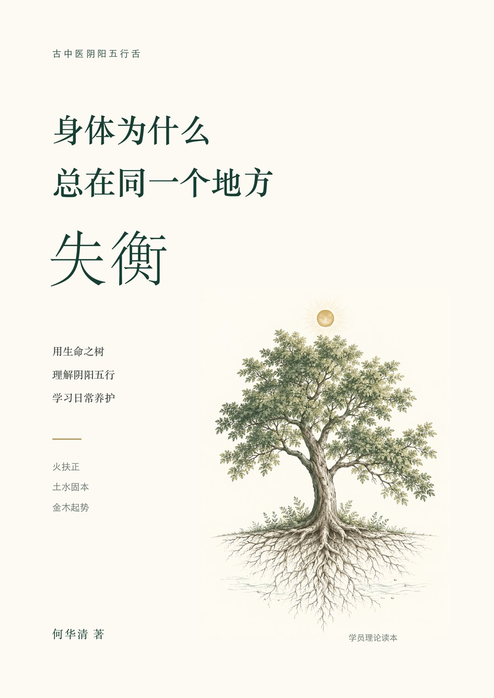
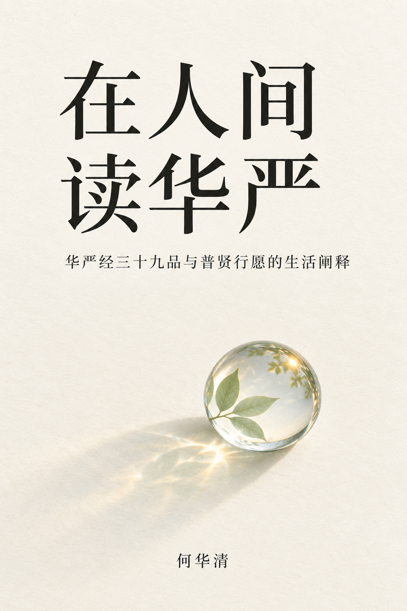

01 / 身体与日常全书免费
身体为什么总在
同一个地方失衡
用生命之树理解阴阳五行，学习日常养护。
从立心、明理，到观察与实践。四部十五章，陪你理解生命的往来，也把每一份关照，放回具体的生活。
- 作者
- 何华清
- 内容
- 四部 · 十五章 · 五个附录
- 版本
- V2.5 A 插图金句版
手机阅读 · 字号调整 · 夜间模式 · 本机书签与续读

02 / 读经与生活全书免费
在人间读华严
华严经三十九品与普贤行愿的生活阐释。
沿《华严经》三十九品与普贤行愿，读经典，也读生活。由家庭、工作与关系中的困惑出发，理解智慧、慈悲与愿行。
- 作者
- 何华清
- 内容
- 四十章 · 阅读导引 · 名相回读 · 善财参学索引
- 版本
- 精修版 V2.0 · 完整电子书
手机阅读 · 全书搜索 · 字号调整 · 夜间模式 · 本机书签与续读